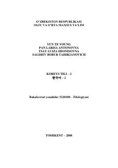

KTKoreys tilini o'rganuvchilar uchun mo'ljallangan ikkinchi bosqich o'quv qo'llanmasi.
Ushbu darslik koreys tilini o'rganayotgan o'zbek tilida so'zlashuvchi talabalar uchun mo'ljallangan ikkinchi kitobdir. Darslik 25 ta darsdan iborat bo'lib, har bir dars yangi matnlar, grammatika, leksika va amaliy mashqlarni o'z ichiga oladi.